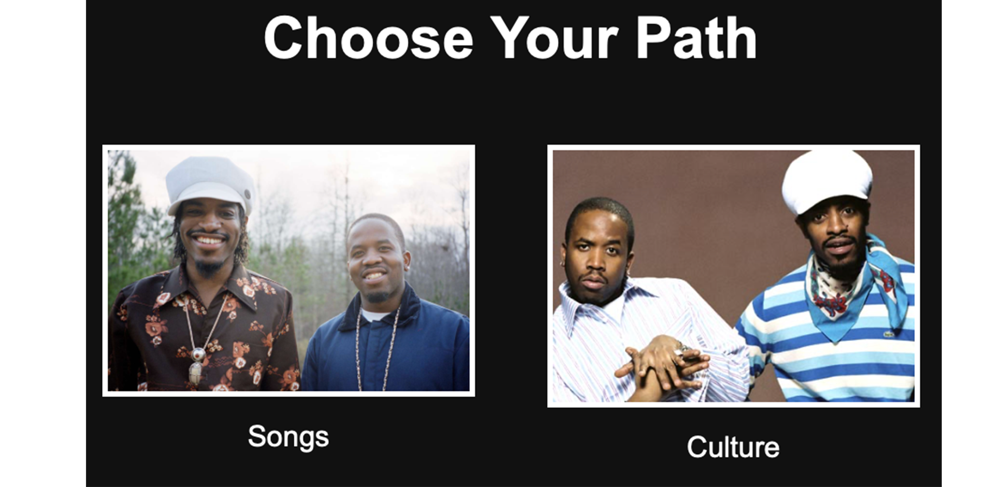
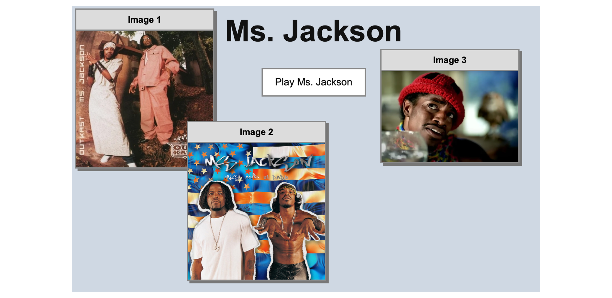
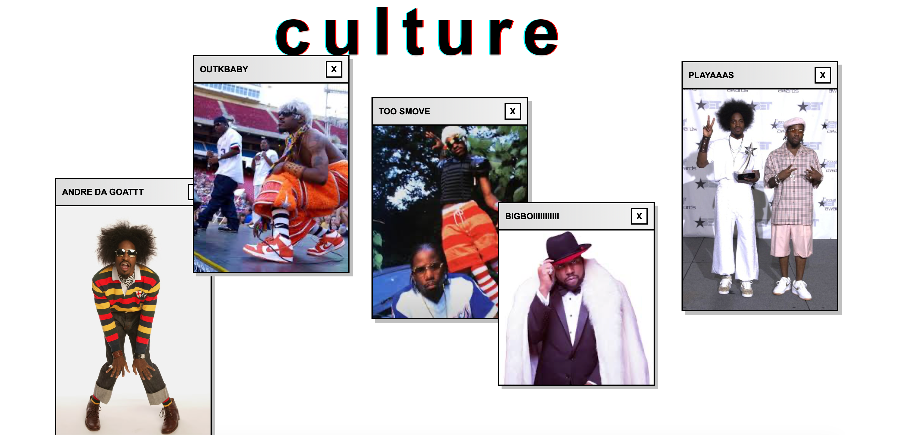

Net Art
This is my Net Art project where I made a showcase for my favorite rap group ever Outkast. In this project I uses images that I found online plus my own designs to create an interactive website about the duo. It takes you through some of their most famous songs and shows the culture of them when it comes to their music and fashion.


